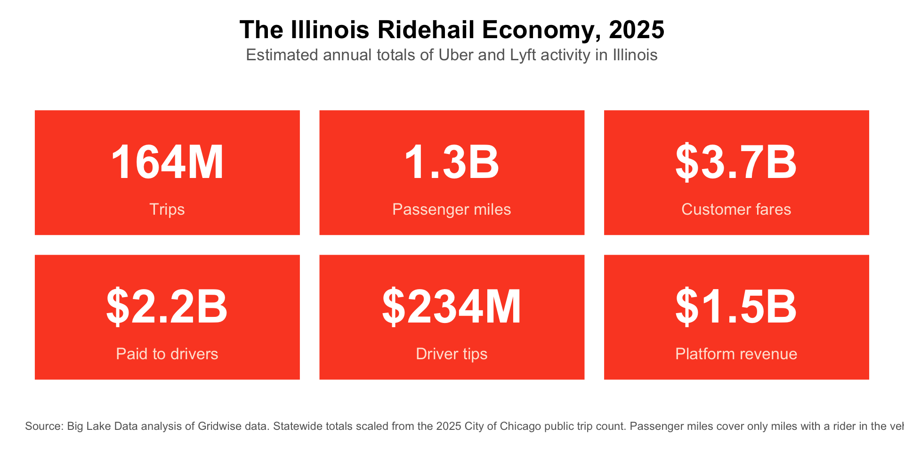
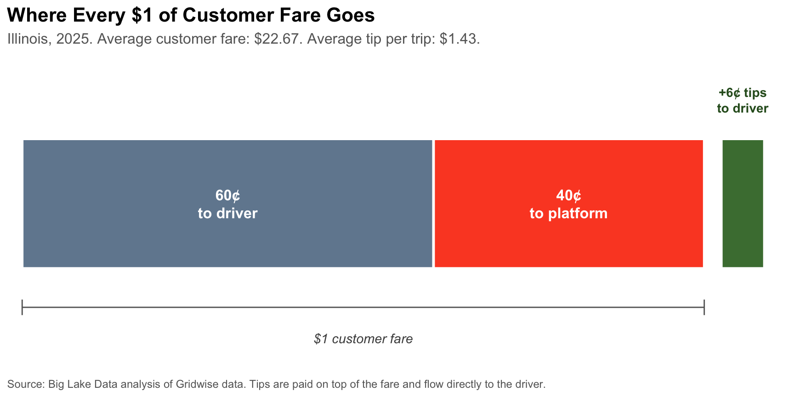
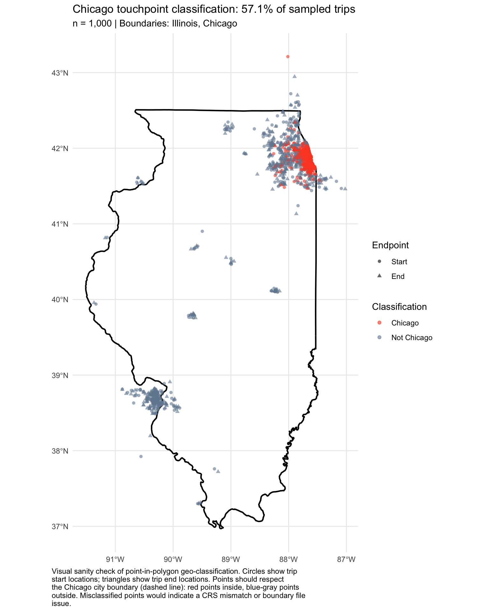

The Illinois Ridehail Economy: 2025 Data Brief
Statewide estimates of Uber and Lyft trips, miles, and revenue
Overview
This brief presents statewide estimates of the size and composition of the Illinois ridehail economy for calendar year 2025. It quantifies how many trips were taken, how many passenger miles were driven, how much customers paid, how much of that revenue reached drivers as pay and tips, and how much was retained by the platforms.
The analysis combines per-trip averages from the Gridwise ridehail driver panel with 2025 trip counts published by the City of Chicago. A single scaling factor, the share of sampled trips that begin or end in Chicago, is used to extrapolate from the Chicago public benchmark to a statewide total.
The Illinois Ridehail Economy in 2025
Headline Statistics
The table below presents the same six headline numbers alongside per-trip averages. Per-trip averages are computed directly from the Gridwise panel. Annual totals are the per-trip averages multiplied by the statewide trip estimate of 163,666,354.
| Illinois Ridehail Market: 2025 Headline Statistics | |||
|---|---|---|---|
| Annual estimates, statewide | |||
| Statistic | Annual Total | Per Trip | Definition |
| Total Annual Trips | 163,666,354 | Total Uber and Lyft trips statewide. Scaled from the 2025 City of Chicago public trip count using the Gridwise panel's Chicago share. | |
| Total Annual Passenger Miles | 1,269,949,978 | 7.8 mi | Passenger miles (P3): miles with a rider in the vehicle. Excludes deadhead miles driven before pickup or between trips. |
| Total Annual Customer Fares | $3,710,877,312 | $22.67 | What customers paid for trips, before tips and after promotions. |
| Total Annual Driver Pay (excl. tips) | $2,238,195,815 | $13.68 | Amount the app paid drivers for trips, including base pay, bonuses, and other trip pay components. Does not include tips or non-trip incentives. |
| Total Annual Driver Tips | $234,472,528 | $1.43 | Tips paid to drivers through the app. Does not include cash tips. |
| Total Annual Platform Revenue (Full App Take) | $1,472,681,497 | $9.00 | Amount retained by the platform from customer fares, including platform fees, insurance, taxes, and booking fees. Effective take rate: 39.7% of customer fares. |
| Source: Big Lake Data analysis of Gridwise trip data (February 2025 to November 2025) scaled to 2025 City of Chicago public trip counts. | |||
Customer fares are split between drivers and the platforms. Driver pay (excluding tips) represents 60.3% of customer fares, and platform revenue represents 39.7%. Tips are paid by customers on top of the fare and flow directly to drivers, adding roughly $1.43 to the average trip.

Methodology
Data sources
The underlying trip data come from Gridwise, a commercial panel of ridehail drivers who use the Gridwise mobile app to track their earnings. The sample for this analysis comprises 1,146,753 Uber and Lyft trips from 3,567 unique Illinois drivers in four target months: February 2025, May 2025, August 2025, and November 2025 (the middle month of each calendar quarter).
Per-trip averages computed from this four-month sample are treated as representative of calendar year 2025 and applied to the statewide trip estimate described below. Statewide trip counts are anchored to 93,512,152 Transportation Network Provider (TNP) trips reported to the City of Chicago for calendar year 2025, accessed through the Chicago Data Portal API.1
Key definitions
Customer Fares: What customers paid for the trip, before tips and after promotions.
Driver Pay: What drivers received from the app for the trip, which includes base pay, bonus pay, and other trip pay, but excludes tips.
Driver Tips: Tips paid through the app by customers to drivers. Excludes cash tips.
Platform Revenue: Customer Fares minus Driver Pay. This residual captures platform fees, insurance surcharges, taxes passed through, booking fees, and any other deductions retained by the platform.
Passenger Miles (P3): Miles with a passenger in the vehicle. Does not include repositioning (P1) or driving to pickup (P2) miles. Total miles driven by Illinois ridehail drivers to deliver these services is therefore higher than the passenger miles figure reported here.
Scaling methodology
The statewide annual trip estimate is calculated by dividing the 2025 Chicago public trip count by the share of sampled Gridwise trips that begin or end inside the City of Chicago (57.1%, rounded).
Annual dollar totals and total passenger miles are calculated by multiplying the statewide trip estimate by the corresponding per-trip average from the Gridwise sample.
Geographic Classification
57.1% of sampled Illinois trips (with non-missing block coordinates) had a Chicago touchpoint, meaning the trip started or ended inside the City of Chicago boundary. This share is the denominator in the scaling calculation above. The map below plots a random sample of 1,000 trip start and end locations from the Gridwise sample, colored by classification, as a visual sanity check that the point-in-polygon test is behaving correctly.

Limitations
The Gridwise sample is a convenience sample of drivers who use the Gridwise app. Drivers who use a gig assistance app may differ from those who do not in ways that cannot be directly measured. To limit the effect of this, the analysis relies on per-trip averages (which are less sensitive to sample composition than per-driver averages) and scales trip volumes to population using the independent City of Chicago public benchmark rather than the panel’s sample size.
The temporal coverage of the sample is four months drawn from each calendar quarter of 2025 (February, May, August, November). All four quarters are represented but each contributes only one month. Seasonal variation in fares, trip distances, and driver behavior is partially captured but not fully.
Non-trip earnings, including quest bonuses, streak bonuses, and other incentives paid outside of individual trips, are not included in the Driver Pay figures reported here. Including them would raise the Driver Pay total.
Vehicle operating expenses (gas, maintenance, depreciation, insurance) are not deducted from the Driver Pay figures reported here. Driver Pay as reported is gross pay from the app, not net pay after driving costs.